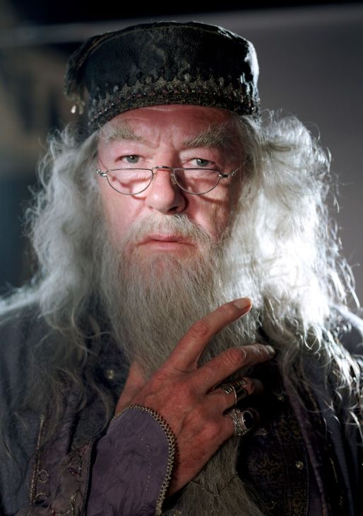

Presidential greetings

"Hogwarts combines pioneering expertise in online learning with over 350 years of experience in residential pedagogy. By sharing Harvard’s ideas with the world we help define the future of education.”
- Bharat Anand, Vice Provost for Advances in Learning
Hogwart Online brings learners an extensive catalog of courses built on global expertise and research. Curated series of courses combine faculty and disciplines from across the University to extend learning opportunities.
Each course was developed by Hogwart’s Office of the Vice Provost for Advances in Learning (VPAL).
Parkes has been an engaged university citizen, serving on committees and tasks forces dealing with Harvard’s Allston campus development, the future of libraries, transportation, and strategic planning. He has also co-led and helped stand up several initiatives. These include the master’s degree program in Data Science and the Summer Program for Undergraduates in Data Science.